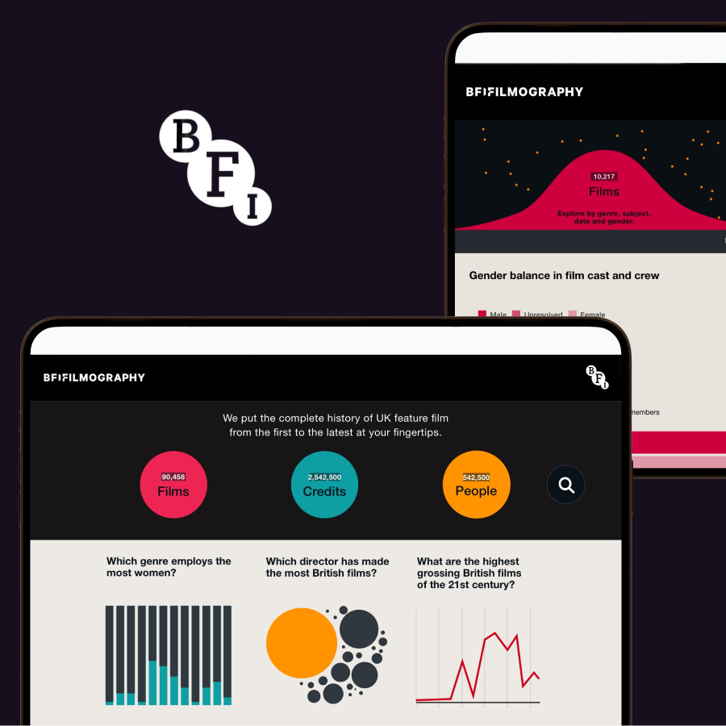
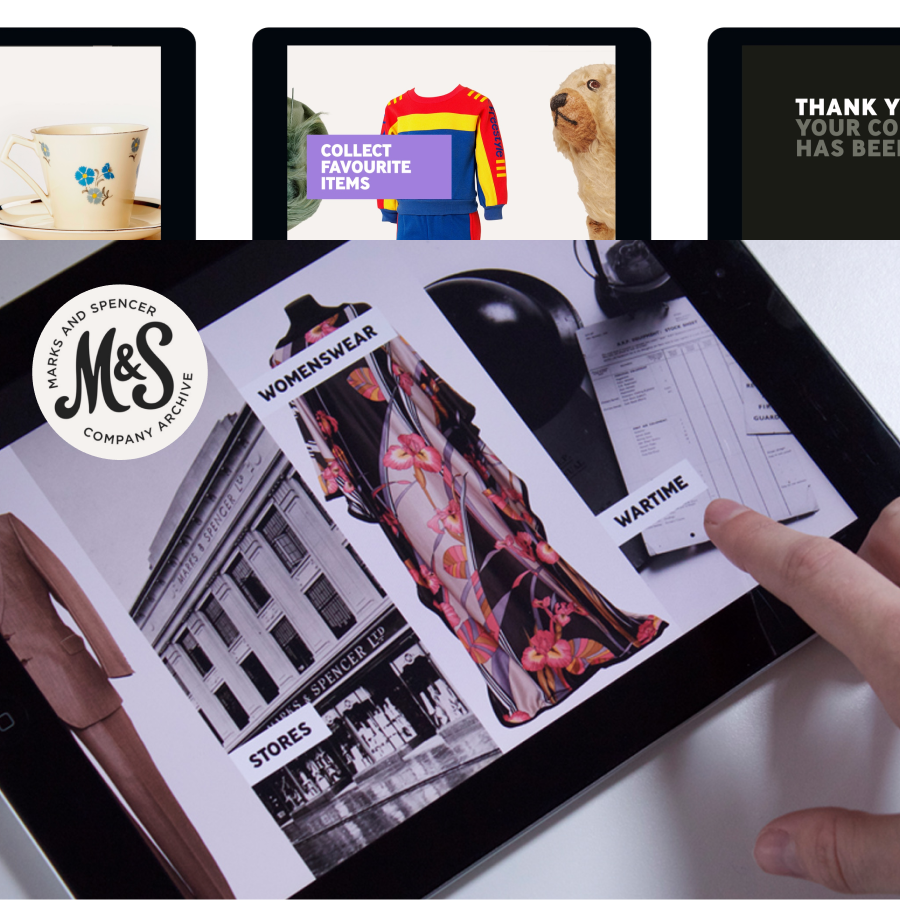
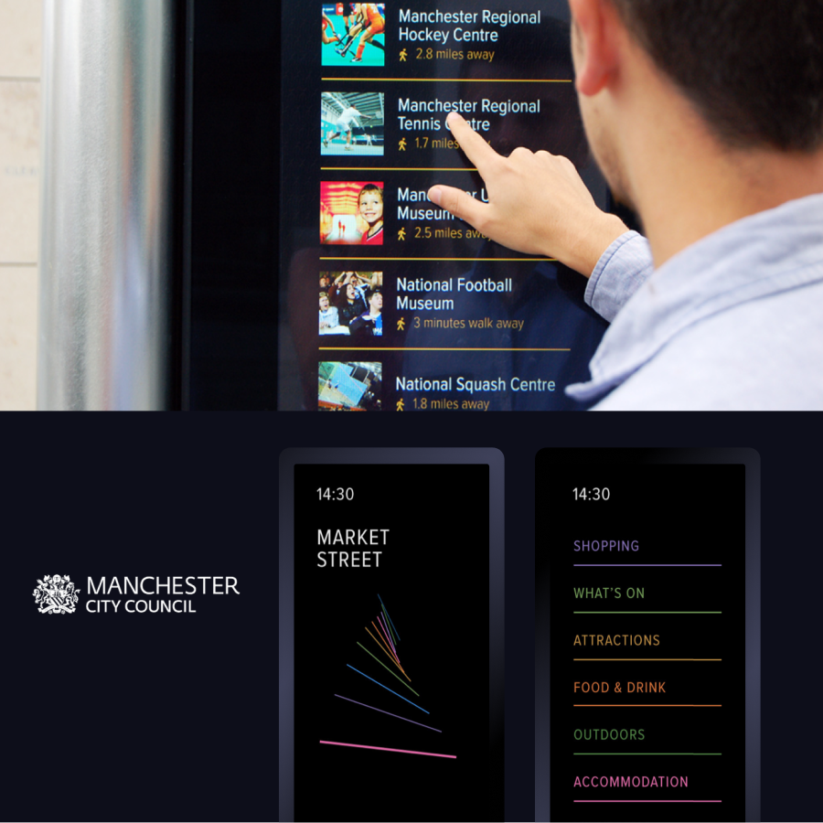
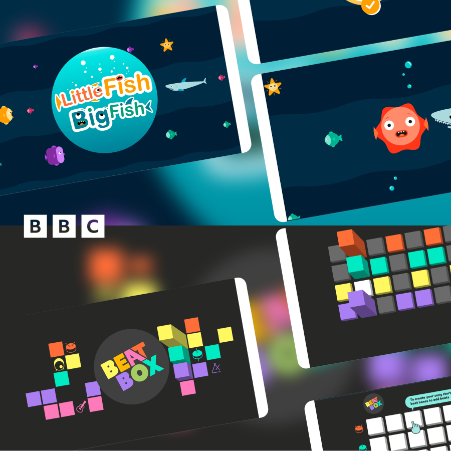
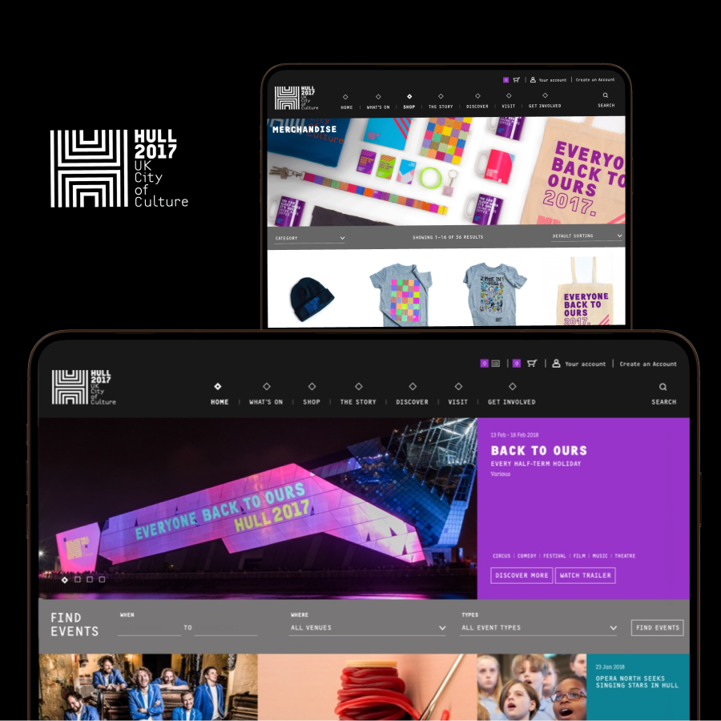

magneticNorth
Thirteen years designing digital experiences where craft, interaction and storytelling meet.
Background
During thirteen years at magneticNorth, one of the UK's leading digital agencies, I designed award-winning digital experiences for global brands, cultural organisations and public services.
The breadth of work strengthened my visual craft and interaction design expertise, foundations that continue to shape my work today.

Selected projects
- BBC Sport — Helped integrate Summer Olympics content into the BBC Sport app for the first time.
- BBC Bitesize — Co-designed the signed-in personalised learning experience with students.
- BFI — Designed an interactive data visualisation interface showcasing the British Film Institute's film archive.
- Universal Pictures UK — Art directed the Superhero Yourself augmented reality campaign.
- Manchester City Council — Led the design of interactive city-centre wayfinding screens.
- Hull UK City of Culture 2017 — Translated the print identity into a responsive website.
- Marks & Spencer Archive — Designed an interactive museum experience showcasing product history.
- BBC Accessible Games — Designed two accessible games for children and young adults.

Result
A body of work spanning service design, product thinking, visual systems and interaction craft, with a lasting influence on how I approach complex digital experiences.


